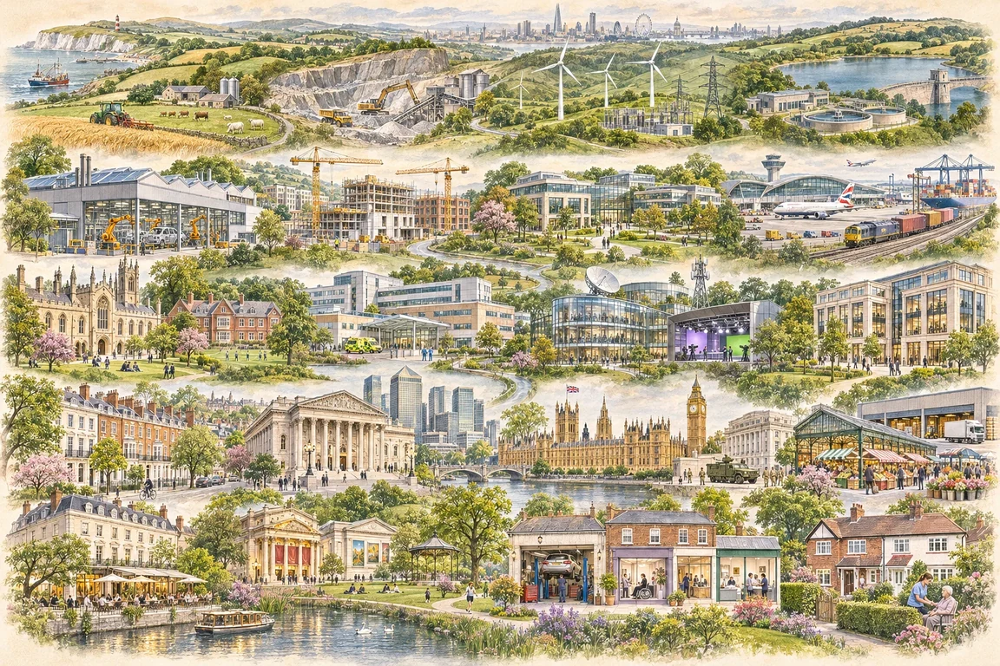
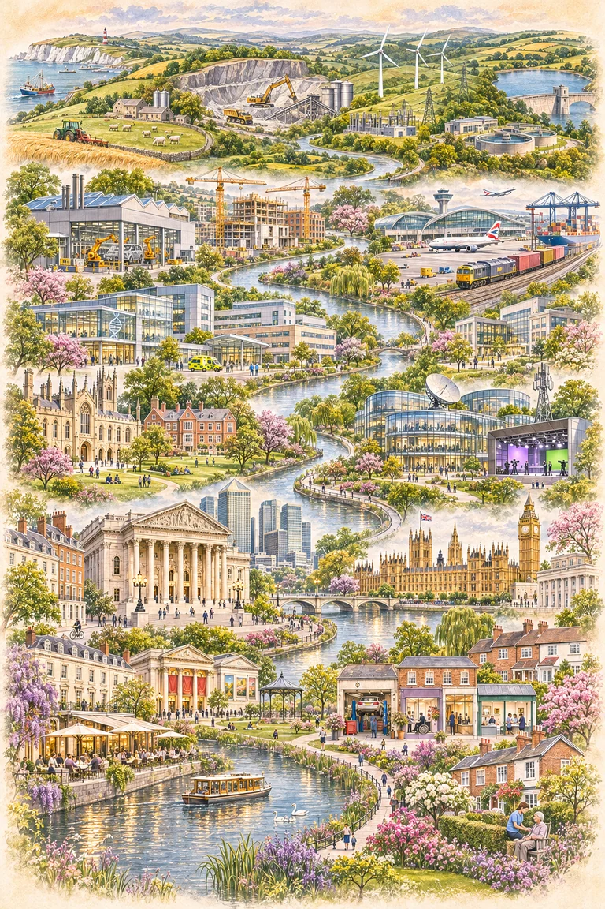
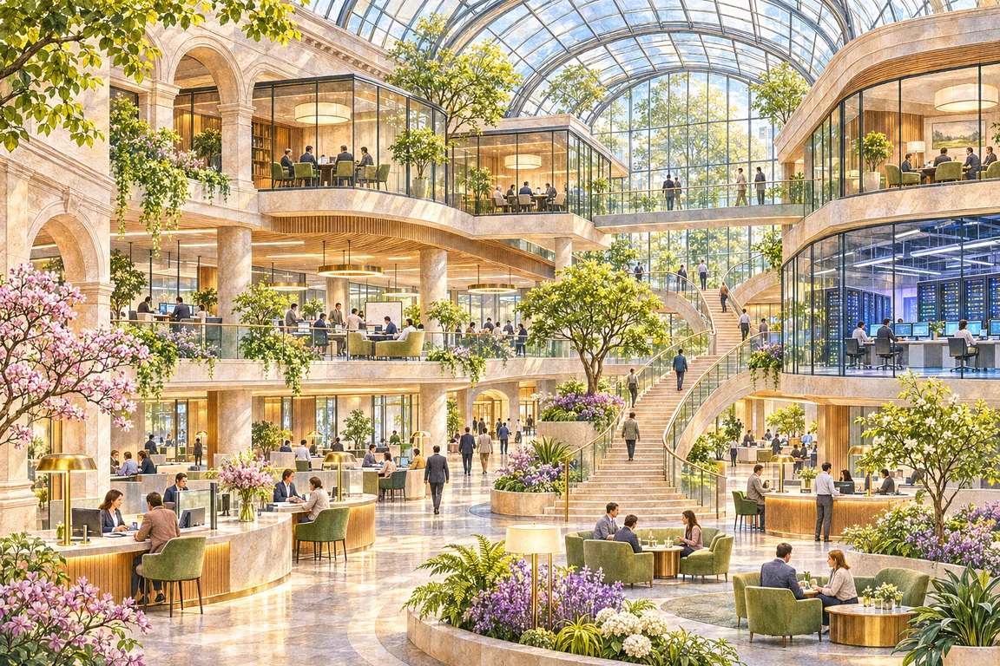
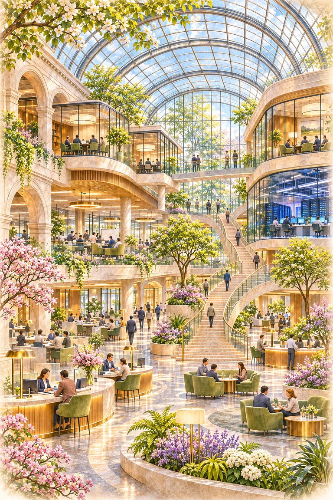
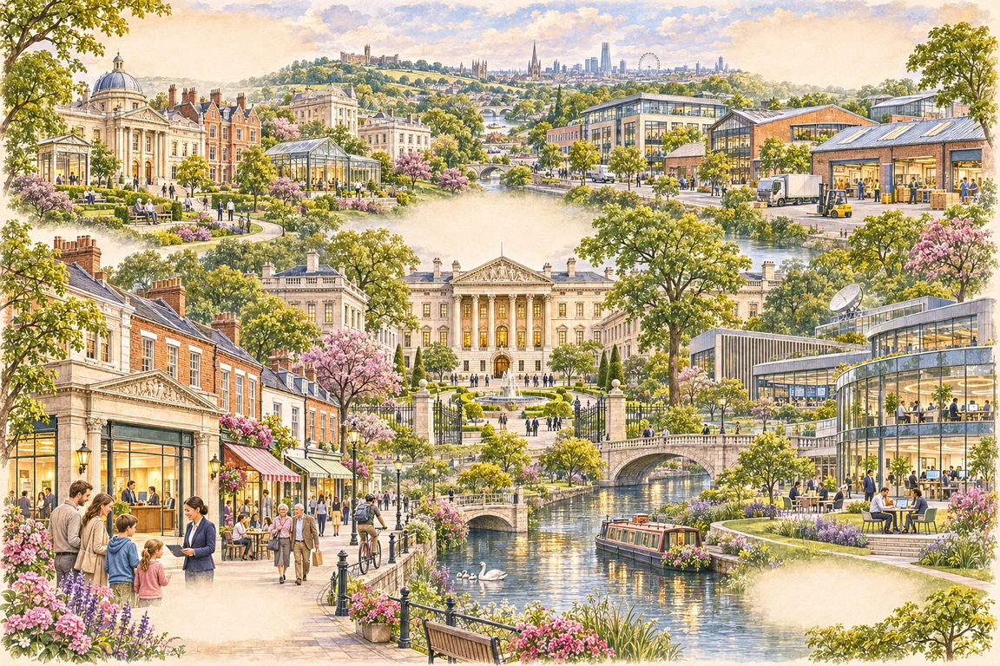
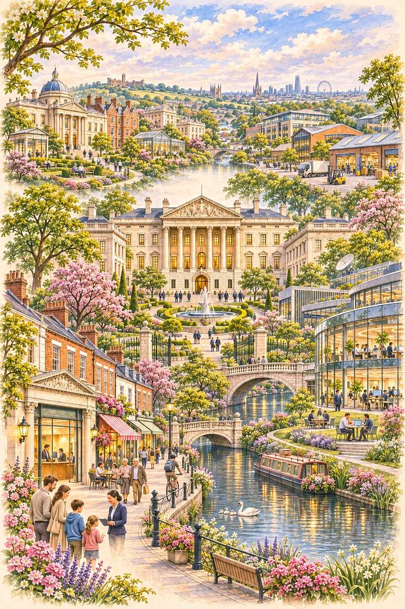

Accepted reference · Crop · Purpose-composed portrait
Design comparison artifact, not a product screen. Conceptual artwork; no premises, financial scale or real relationships encoded.
Uk Landscape

Accepted 1152px delivery reference, unchangedA · Subject-focused CSS crop, bytes intact
B · New portrait composition, unaccepted design conceptUk Forces
Accepted 1152px delivery reference, unchangedA · Subject-focused CSS crop, bytes intactB · New portrait composition, unaccepted design conceptBanking Landscape
Accepted 1152px delivery reference, unchangedA · Subject-focused CSS crop, bytes intact B · New portrait composition, unaccepted design concept
B · New portrait composition, unaccepted design conceptBanking Forces
Accepted 1152px delivery reference, unchangedA · Subject-focused CSS crop, bytes intactB · New portrait composition, unaccepted design conceptLloyds Inside

Accepted 1152px delivery reference, unchangedA · Subject-focused CSS crop, bytes intact
B · New portrait composition, unaccepted design conceptLloyds Landscape

Accepted 1152px delivery reference, unchangedA · Subject-focused CSS crop, bytes intact
B · New portrait composition, unaccepted design conceptLloyds Forces
Accepted 1152px delivery reference, unchangedA · Subject-focused CSS crop, bytes intactB · New portrait composition, unaccepted design concept